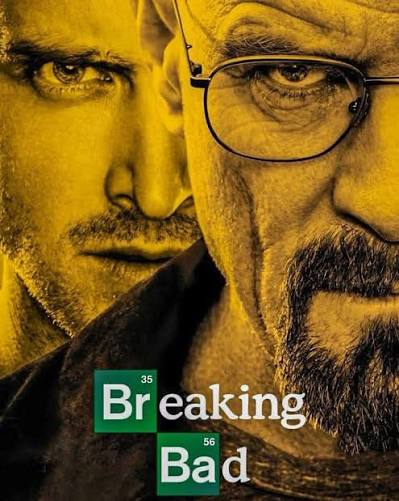

[SÉRIE]
Breaking Bad
2008 • 5 Temporadas • Drama
9.5
/ 10
Após descobrir que está doente, o professor de química Walter White começa a produzir metanfetamina para garantir dinheiro para sua família, entrando cada vez mais no mundo do crime.
Criação: Vince Gilligan
Elenco: Bryan Cranston, Aaron Paul, Anna Gunn e Dean Norris
Nossa crítica
/////
Veredito
/////////
9.5
de 10